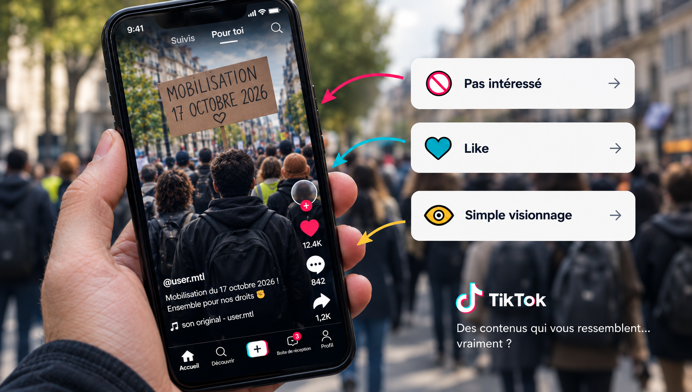

« Pas intéressé »,
like ou simple visionnage :
« Dans quelle mesure les interactions des utilisateurs avec les vidéos TikTok — désintérêt, like ou simple visionnage — influencent-elles la présence de contenus relayant l’appel à la mobilisation des Gilets jaunes du 17 octobre 2026 dans leur fil « Pour toi » ? »
Découvrir l'enquête →
L’appel du 17 octobre 2026
Un mot d’ordre relayé sur TikTok,
au cœur de notre enquête.
Notre protocole
3 comptes de test, 3 conditions,
une même exposition.
Les résultats
Des graphiques, des exemples
et des comparaisons.
La conclusion et les limites
Ce que notre enquête éclaire...
et ce qu’elle ne peut pas dire.